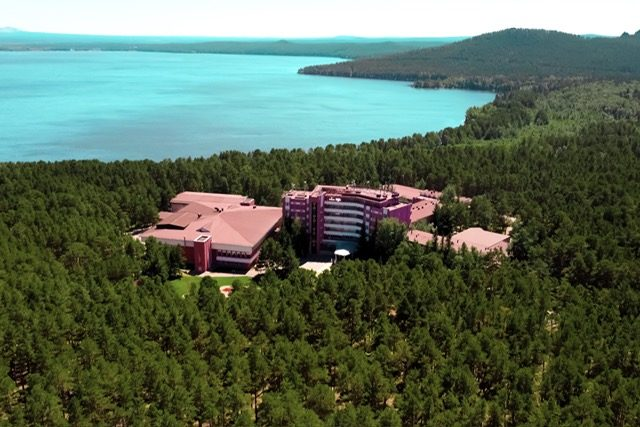
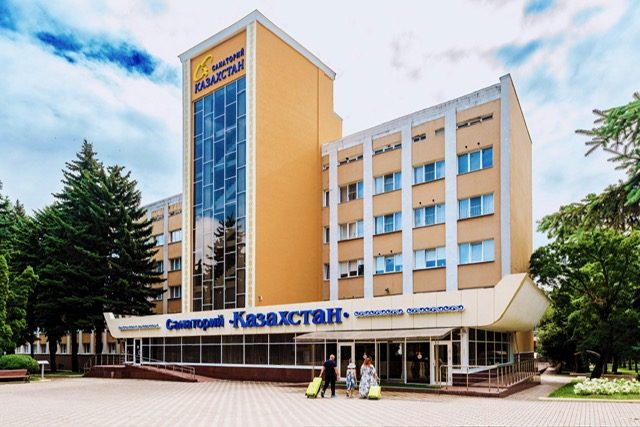

Четыре курорта.
Одна забота о вас.
Здравницы сети «Окжетпес» объединяют санаторное лечение, оздоровление и отдых. Выберите подходящий климат и познакомьтесь с возможностями каждого филиала.

Алматы
Almaty Resort
Термальная вода и современная медицина
- Собственный термальный источник
- Диагностика и check-up
- Грязелечение и реабилитация

Бурабай
«Окжетпес»
Сосновый бор, озеро и природные факторы
- Климатотерапия и минеральные воды
- Грязелечение и кумысолечение
- Бассейн, хамам и прогулки
Иссык-КульГорный воздух · озёрный простор
Иссык-Куль
«Казахстан»
Озёрный курорт для отдыха и восстановления
- Отдых у горного озера
- Номера и коттеджи
- Оздоровление и семейный отдых

Ессентуки
«Казахстан»
Минеральные воды и санаторное лечение
- Питьевое лечение минеральными водами
- Бальнеология и диагностика
- Бассейн, парк и досуг